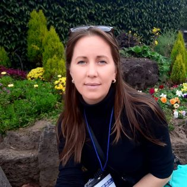

Date generale

Descarcă CV
Descarcă CV
-
Date Generale
- Nume, Prenume: Frunza Elena
- Funcția: Profesor de informatică
- Grad didactic: II
- Adresa: Str. Unirii 47, S. Boșcana, r-nul Criuleni, Republica Moldova
- Telefon: 068028920
- Email: elenytv22@gmail.com
frunza.elena@edu.md -
Experiența Profesională
- 2010 - prezent: profesor de informatică la Liceul Teoretic ”M. Stratulat”
- 2006-2008:Responsabil Intrare Clienți, Metro Cash&Carry nr.1
-
Educație și formare
- 2018 - 2019: Cursuri de formare, organizate de Oficiul Special Guvernamental pentru Educație al Provinciei JEJU din Republica Coreea, inclusiv cu prezența fizică în Coreea;
- 2014- 2015:Cursuri de recalificare profesională la specialitatea Informatica, Profesor de informatică;
- 2002-2006:USM, fac. Matematică și Informatică, Chișinău, specialitatea Informatică și Limbi moderne;
- 1999-2002:Liceul Teoretic ”Nicolae Bălcescu” din com. Ciorescu;
- 1991-1999:Școala medie Boșcana;